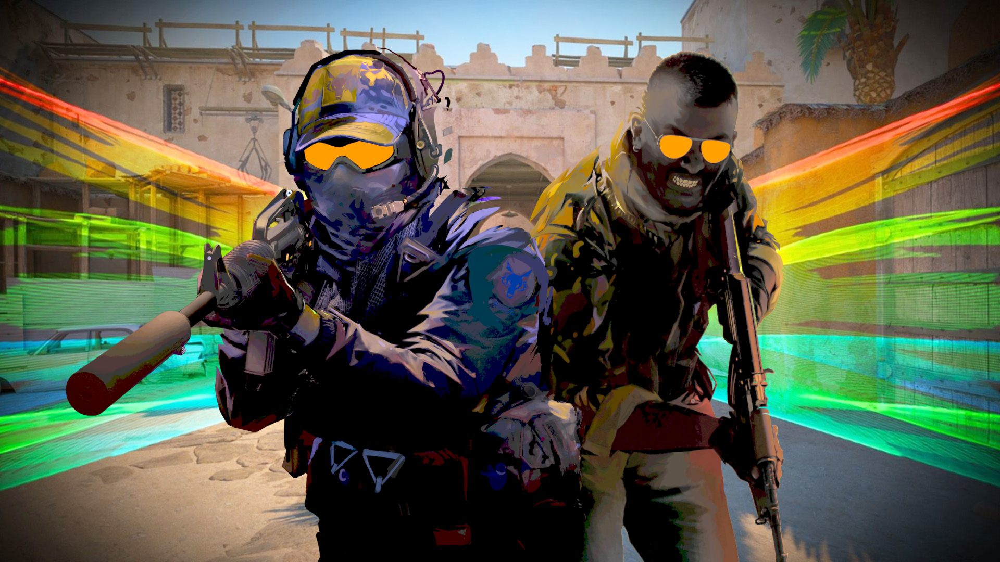
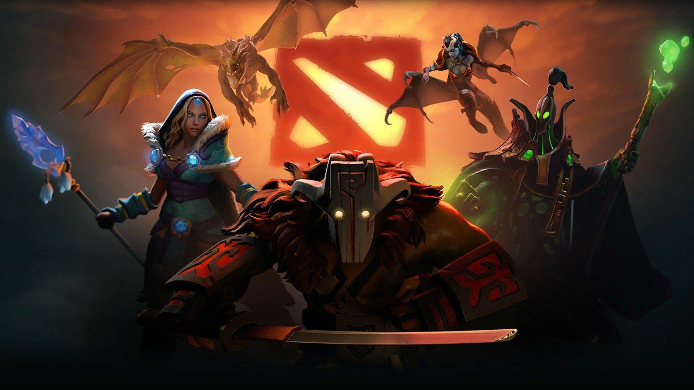
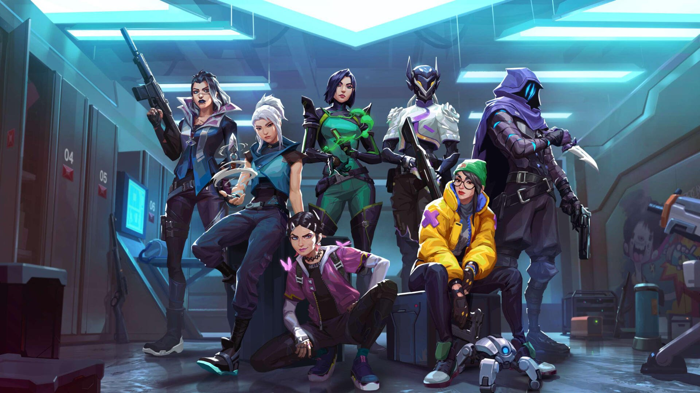

Гра для відпочинку
Історія, творчість, задоволення від процесу або час із друзями. Не кожен сеанс має містити вправи й оцінку результатів.
Ігри, кіберспорт і спільні правила — простою мовою. Щоб підтримати інтерес дитини, спочатку варто зрозуміти, що саме їй подобається.
Запитайте, що цікаво саме вашій дитині. Не кожне захоплення потрібно перетворювати на кар’єрний план.
Історія, творчість, задоволення від процесу або час із друзями. Не кожен сеанс має містити вправи й оцінку результатів.
Конкретне завдання: повторити дію, перевірити її в матчі та обговорити висновок. Кількість годин сама по собі не описує зміст заняття.
Організовані змагання у відеоіграх із правилами та суперниками. Участь у турнірі й професійна робота гравцем — різні етапи. [6]
Три дисципліни, які представлені на нашому сайті. Познайомтеся з правилами та перевірте відповідність змісту віку.

Окрім стрільби, гравці узгоджують позиції, використання гранат і спільні дії. У грі є зображення насильства, чати та внутрішні покупки, зокрема випадкові предмети.
Обговоріть голосове спілкування, витрати та різницю між тренуванням на карті й змагальним матчем.
Про гру: [11]

Рішення залежать від ролі героя, ресурсів і дій команди. Є фантастичні бої, онлайн-спілкування та покупки. Добре знання героя не усуває потреби домовлятися з іншими.
Перед вибором перевірте актуальну версію гри, магазин і налаштування спілкування. Історичний запис USK залишено в джерелах; він не є поточною рекомендацією віку на нашому сайті.
Про гру: [12]

У типовому режимі атакувальна сторона встановлює пристрій Spike, а захисна перешкоджає цьому або знешкоджує його. Є насильство, спілкування з іншими гравцями й внутрішні покупки.
Попросіть дитину пояснити роль обраного агента та покажіть разом, як вимкнути небажаний чат і поскаржитися на поведінку.
Про гру: [13]
Ігри не варто ні ідеалізувати, ні оцінювати одним стереотипом. Подивімося на поширені уявлення уважніше.
Гра може бути відпочинком, творчістю й способом спілкування. UNICEF радить знайомитися з іграми разом із дитиною. Це не означає, що будь-який контент або будь-яка тривалість однаково доречні. [1]
Самого захоплення недостатньо для такого висновку. ВООЗ описує втрату контролю, пріоритет гри над іншими сферами та продовження попри значні негативні наслідки. Діагноз встановлює фахівець. [2]
Особистий ранг не є контрактом із командою чи гарантією доходу. Запитайте, які навички дитина хоче освоїти зараз, і відокремте інтерес до змагань від обіцянок професійного успіху.
Сімейний медіаплан AAP пропонує узгоджувати правила під потреби родини та переглядати їх із часом. Обговорюйте не лише хвилини, а й зміст гри, сон, навчання та справи поза екраном. [3]
Матеріали профільної федерації та державної програми для батьків. Відео англійською; поруч є українські пояснення та запитання для розмови.
Вступне відео за участю представників федерації: як виник кіберспорт і чим організовані змагання відрізняються від звичайної гри. Почніть із нього, якщо хочете розібратися, що мається на увазі під змаганнями у відеоіграх. [6]
Тематичний конспект КіберЛьвів за вступним матеріалом British Esports і поясненнями на цій сторінці. Це не стенограма чи дослівний переклад ролика.
Що дитині цікавіше: відпочинок, навчання конкретної навички чи участь у змаганнях? Чи збігається її мета з вашими очікуваннями?
Ігровий експерт Andy Robertson пояснює участь батьків у питаннях онлайн-ігор. Нижче — український конспект до теми та запитання для спільного обговорення. [7]
Конспект до теми Parent Club, доповнений порадами джерел сторінки. Він допоможе зорієнтуватися без перегляду англомовного відео; це не його дослівний переклад.
Чи знає дитина, як припинити небажане спілкування? До кого вона звернеться, якщо щось збентежить? Яке одне налаштування ви можете перевірити разом?
Це приклад розмови, який можна адаптувати під вашу сім’ю. AAP радить створювати медіаплан спільно, включати дорослих і переглядати правила з часом. [3]
«Що тобі найбільше подобається? Ти хочеш пограти з друзями чи щось відпрацювати?»
Врахуйте вправи, матчі, очікування й паузи. Вирішіть заздалегідь, що робити, коли гра затягнулася.
Узгодьте витрати та покажіть, як припинити небажане спілкування. Дитина має знати, що може попросити допомоги.
У спокійний момент перевірте, що працює. Змінюйте домовленість разом, а не лише після конфлікту.
Обговорюйте конкретні зміни, а не ставте діагноз за рангом, назвою гри чи однією тривалою сесією.
Чи не витісняє гра звичний відпочинок, навчання та інші важливі заняття?
Чи може дитина розповісти про неприємний досвід і чи залишається місце для взаємодії поза грою?
Чи вдається дотримуватися домовленостей? Чи продовжується гра попри суттєві проблеми в інших сферах?
Чи зрозумілі витрати й налаштування акаунта? Чи немає тиску поділитися особистими даними?
Не обов’язково знати всі терміни. Важливіше мати зрозумілий спосіб говорити про інтереси, межі та підтримку.
Ми не пропонуємо універсального числа: вік, потреби й сімейний розклад відрізняються. Визначайте межі так, щоб залишався час на сон, навчання, рух і спілкування. Калькулятор показує тривалість заданого заняття, а не безпечну норму. [3]
У мережевому матчі одночасно беруть участь інші люди. Можливості пауз залежать від гри та режиму; вихід може впливати на команду. Краще узгодити останній матч до початку. Якщо потрібне негайне завершення через важливу ситуацію, пріоритет має вона.
Не починайте з великих покупок. Спочатку з’ясуйте, чи відповідає наявний пристрій вимогам конкретної гри й чи є стійкий інтерес. Висока ціна обладнання не гарантує результату.
Не для кожного захоплення. Якщо є конкретне завдання, попросіть наставника пояснити формат заняття, досвід роботи з цим віком, ціну, правила спілкування та порядок скасування. Самі підписники або ранг не підтверджують педагогічних навичок.
Професійний шлях існує. Почніть із конкретної навчальної мети й досвіду організованих змагань, зберігаючи освіту та інші інтереси. Для вибору наступного кроку корисні зворотний зв’язок і зрозумілі умови занять.
Рейтинг та його пояснення допомагають оцінити зміст гри. Перевіряйте систему, платформу й регіон, а також можливості чату та покупки. Це не оцінка ігрової складності чи персональної готовності дитини. [5]
Подивіться, з чого складається тренування й скільки займають його частини. Калькулятор допомагає порівняти варіанти й узгодити час.
Матеріали перевірено 4 листопада 2026 року. Відео й рейтинги мають власні дати та контекст; практичні приклади домовленостей на цій сторінці підготовлено для КіберЛьвів.